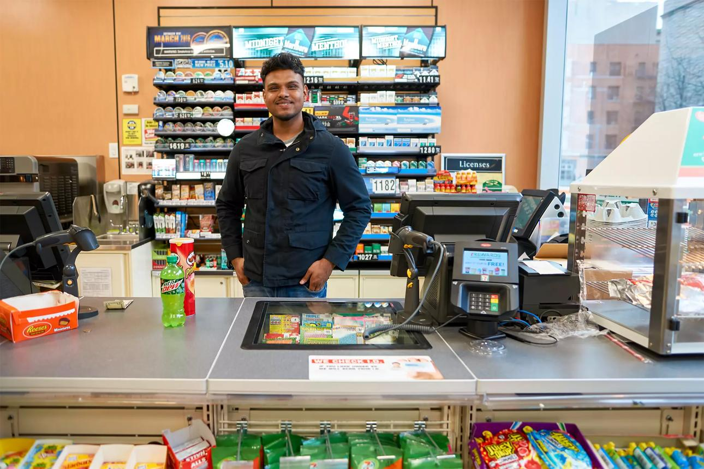
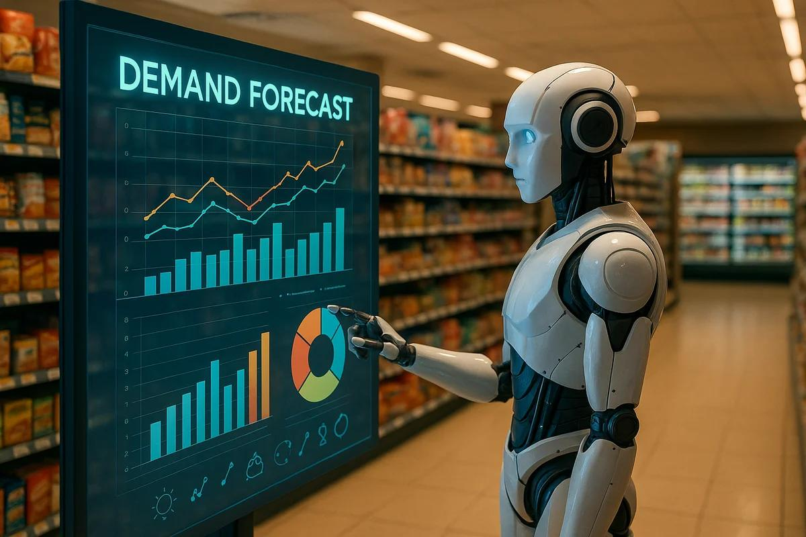
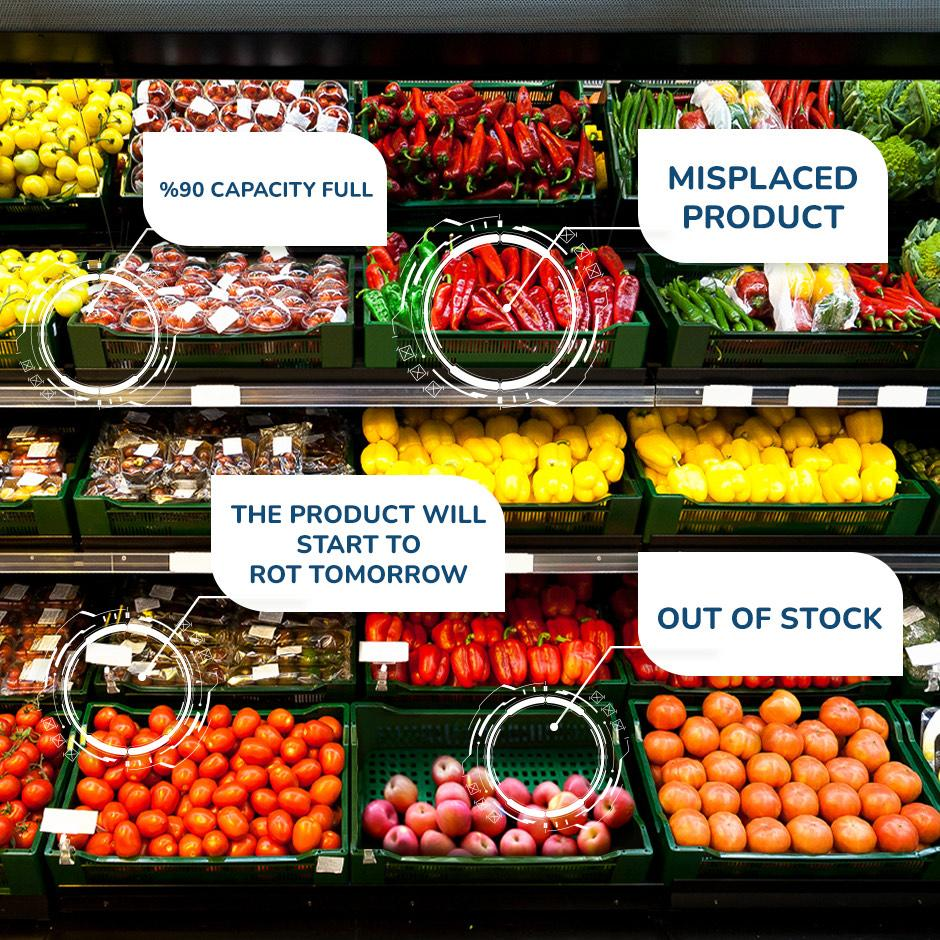
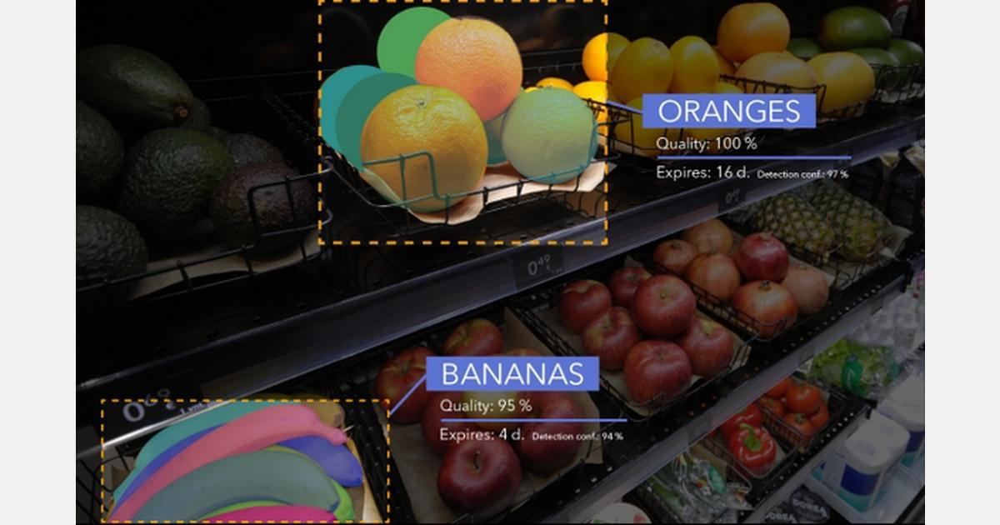
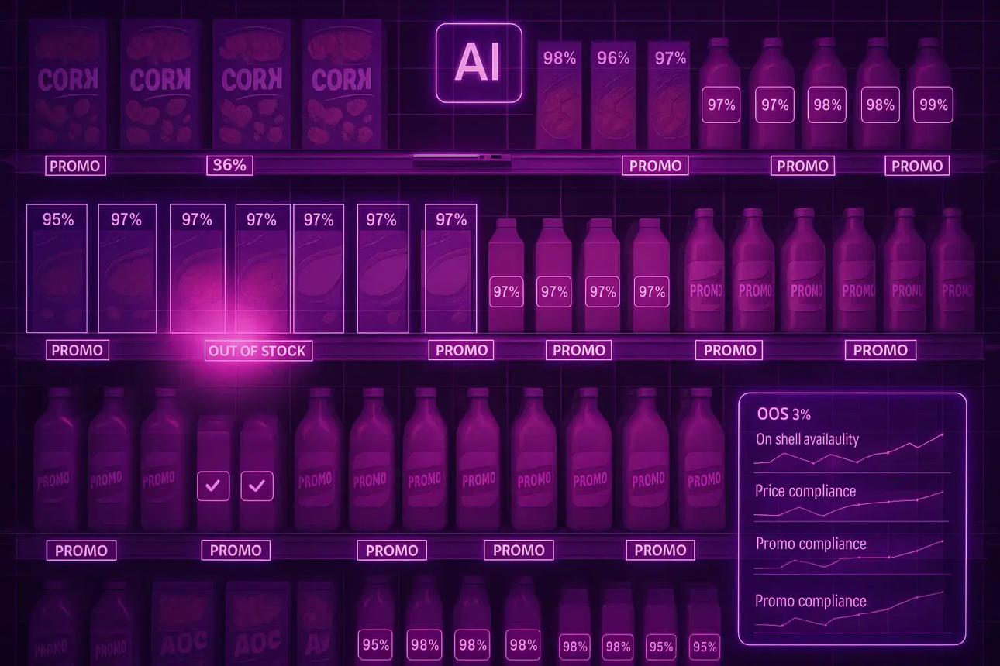

FusionMargin AWMO converts perishable food-to-go data into real-time margin decisions recommending exactly what to prep, when to markdown, and which staff action to execute so cafés, convenience stores, and coffee chains stop losing money to spoilage, stockouts, and poor markdown timing.
Every FusionMargin AWMO deployment follows a proven four-stage decision journey from data ingestion and freshness modelling, to spoilage prediction and constrained optimisation, to precise "Next Best Action" delivery to your team all without requiring data science expertise from your operations or management team.

Pull real-time POS sales, waste logs, batch records, and shelf-life rules. Structured data ingestion ensures no perishable signal is missed before intelligence processing begins.
The Freshness-State Decision Model tracks each SKU by age bucket and spoilage risk estimating exactly when each batch moves from "safe to hold" to "urgent to move."
The Constraint-Aware Optimisation Engine runs hundreds of prep, markdown, and pull scenarios honouring batch sizes, labour windows, and shelf capacity before recommending any action.
Deliver next-best-action directives to your team in real time while the Closed-Loop Learning Engine continuously improves recommendations from every execution outcome.
FusionMargin AWMO combines five proprietary AI engines into a single food-to-go decision layer the only platform that unifies Demand Forecasting, Freshness-State Spoilage Prediction, Constraint-Aware Optimisation, Execution Tracking, and Closed-Loop Learning into one prescriptive margin intelligence system for cafés, convenience stores, and coffee chains.

SKU, site, and daypart-level demand prediction integrating weather proxies, weekday patterns, local events, and store-specific trading behaviour.

Multi-age batch tracking that distinguishes safe-to-hold from urgent-to-move stock, applying different markdown logic by freshness stage.
Margin-maximising decisions that honour real store constraints batch sizes, prep windows, labour availability, and shelf capacity.
FusionMargin AWMO was born from a clear, observed failure: cafés, convenience stores, and coffee chains manage food-to-go operations using manual routines, static reports, and manager judgment with no integrated system to convert real-time perishable data into precise, margin-protecting daily decisions.
Our platform transforms food-to-go management from a reactive, guesswork-driven process into a proactive, AI-powered Margin Operating System. We don't just report what was wasted we model the relationship between every batch, its freshness state, and its markdown window, running optimised scenarios to deliver the single best commercial action before the margin window closes.
Founded by an experienced retail operations leader and a Data Science engineer FusionMargin AWMO combines deep operational domain knowledge with cutting-edge AI, built specifically for the thousands of food-to-go operators losing an average of £10,000 per year to avoidable waste.
Over 4 years of operations and supply chain leadership across catering, pharmaceutical, and chemical industries. Currently supervising operations at Black Sheep Coffee London, with deep expertise in inventory control, KPI monitoring, team leadership, and P&L-linked operational efficiency.
Harshil directs the "Operational Common Sense" of the FusionMargin AWMO algorithms ensuring the platform respects real store constraints like prep windows, batch minimums, and labour capacity that generic AI tools ignore. His background in managing high-volume operations and reducing inventory discrepancies by 25% forms the commercial backbone of the platform's Margin Optimisation logic.
FusionMargin AWMO is an AI-native retail optimisation platform purpose-built for food-to-go, convenience, and hybrid retail environments. The platform combines spoilage prediction, demand forecasting, markdown intelligence, and execution tracking into a single operational decision layer helping retailers reduce waste, improve gross margins, and standardise store-level execution.
Built around a real-time decision engine architecture, FusionMargin AWMO transforms fragmented retail data into actionable operational workflows. The platform continuously analyses inventory freshness, labour constraints, demand variability, and sell-through performance to generate commercially optimised recommendations at store level with sub-second execution capability and closed-loop learning infrastructure.
FusionMargin AWMO is a cloud-native B2B SaaS platform built on a modular architecture React-based store manager interfaces, a hybrid AI decision engine, real-time execution tracking, and UK-compliant data infrastructure designed to serve cafés, convenience stores, and coffee chains without requiring any data science expertise on-site.
SKU, site, and daypart-level demand prediction integrating POS history, weather proxies, weekday patterns, and local event signals.

Multi-age batch tracking model that scores each product unit by spoilage risk and remaining sell-through window.

Margin-maximising action recommendations that honour batch minimums, prep windows, labour availability, and shelf capacity constraints.
Real-time staff task delivery and compliance recording capturing what was recommended, what was executed, and what margin outcome followed.
Continuous improvement engine that learns from every recommendation, execution record, and commercial outcome getting smarter with every shift.
Mobile-first store manager dashboard and staff task interface delivering actionable decisions without requiring any data science expertise.
The UK food-to-go market presents a structurally urgent opportunity for FusionMargin AWMO. With 50,000+ cafés, convenience stores, and coffee chains each losing an estimated £10,000 per year to avoidable food waste, and structural cost pressures from rising food costs and NLW increases adding further margin compression, the demand for prescriptive food-to-go intelligence is both immediate and entirely unaddressed by any existing integrated platform.
Three subscription tiers designed to serve every food-to-go operator from independent cafés to multi-site chains. All plans include the core Demand Forecasting Engine, Freshness-State Spoilage Model, and Next-Best-Action delivery. No data science team required. No expensive consultants needed.
For independent cafés and single-site food-to-go operators seeking real-time spoilage alerts and prep optimisation.
£149For growing café chains and convenience groups requiring full optimisation, execution tracking, and multi-site analytics.
£799For large convenience networks and food-to-go groups managing group-wide margin optimisation and compliance.
£CustomWhether you're an independent café owner, a multi-site convenience operator, or a coffee chain director FusionMargin AWMO can demonstrate measurable margin improvement within your first 4 weeks. No commitment required.
Our team will configure the platform for your site, connect your data, and run a live pilot showing exactly how much margin you're currently losing and how much we can recover.
Every pilot concludes with a documented Margin Impact Report including waste reduction, sell-through improvement, and markdown timing accuracy.